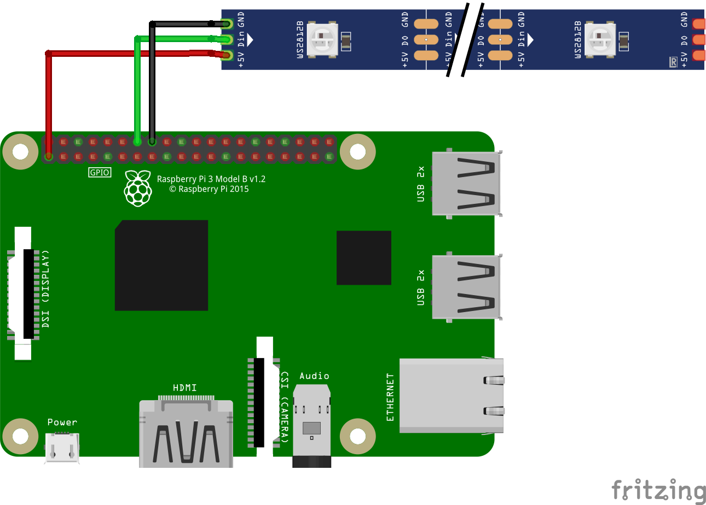

Xilef12000
Home Projects Gallery
See https://github.com/Xilef12000/ws2812-over-artnet
Note: The Documentation is unfinished and still in work.
Connect the ws2812-Strip to the raspberry pi.
This is a very simple way to connect the ws2821-Strip:

| ws2821-LED-Strip | Raspberry-pi | |------------------|----------------------------| | GND | GND (e.g. pin14) | | Din | GPIO 18 (pwm) (i.e. pin12) | | 5V | +3,3 V (e.g. pin1) |
But this method may not work for long strips, for other connection methods see this article by Tony DiCola from Adafruit.
2. This is an optional step to improve the communication with the ws2812 LED-Strip
(This step is not necessary, and can also be done later)
1. open the file:
bash
sudo nano /etc/modprobe.d/snd-blacklist.conf
2. and add:
blacklist snd_bcm2835
save and exit with Ctrl + O and Enter, and the Ctrl + X
3. open the next file:
bash
sudo nano /boot/config.txt
4. and change:
# Enable audio (loads snd_bcm2835)
dtparam=audio=on
to:
# Enable audio (loads snd_bcm2835)
#dtparam=audio=on
save and exit with Ctrl + O and Enter, and the Ctrl + X
5. reboot the Raspberry pi using:
bash
sudo reboot
Installing ws-2812-over-artnet
download the script:
bash
wget https://xilef12000.github.io/demo/ws2812-over-artnet/installws2812-over-artnet.sh
make the file executable and run it with sudo privileges:
bash
chmod u+x installws2812-over-artnet.sh
sudo ./installws2812-over-artnet.sh
(for a manual installation go here)
Change the settings:
open the config.json file:
bash
sudo nano config.json
and set the desired Artnet Universe Id (artnet starts counting from 0)
As well as the number of pixels used.
Test the ws2812-Strip:
bash
sudo python3 ws2812.py
(It is important to run the script with Root-privileges, so that it can access the pwm-function)
The first LED should light up in red, and the last one in blue, all in between should light up in green.
Debug:
- If no LEDs lights up, but there is no error message in the shell, check the wiring
- If the LEDs do not light up in the correct colour, but there is no error message in the shell, check the number of LEDs set in step 6 and/or do step 2.
- If you get an error message check the sudo privileges, the number of LEDs set in step 6, and/or do step 2.
Check the Artnet-Network:
bash
hostname -Istart the Artnet-test-script:
bash
sudo python3 artnet.py
(Sudo must be used, because the library is installed in the Root-directory, to later function in combination with the ws2812-module)
stop the script, by pressing any key
Test the ws2818 over Artnet script:
```bash
sudo python3 ws2812Artnet.py
``` stop it with Ctrl + C (the script will then crash with an error message, which can be ignored)
Setup the auto-startup of the script:
will follow
Setup a shutdown button:
will follow
will follow
bash
sudo apt-get update
sudo apt-get install python3
sudo apt-get install python3-pip
confirm if necessary with y (yes) bash
sudo pip3 install rpi_ws281x adafruit-circuitpython-neopixel
sudo python3 -m pip install --force-reinstall adafruit-blinka
sudo pip3 install stupidArtnet
(And Yes, the libraries need to be installed in the Root-directory, more on that later)